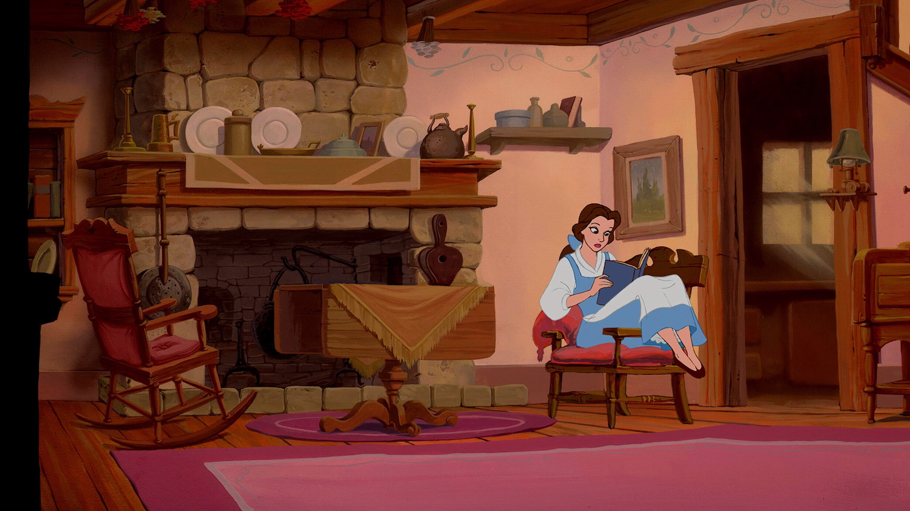

LIKELION_CMJ
HOME
Diary

~~*~~*16.Mai*~~*~~
엄마 생신><
오늘은 멋사 과제가 있어서 vscode켰다가 일기 적고 간다.
독일에서 산 2020 달력이 하루하루 뜯는 달력인데, 너무 아까워서 5월까지 달랑 두장 뜯었다ㅋㅋㅋ
이러면 그냥 다 쓰레기통 행 될 것 같아서 예전에 받은 메모장에 한 장씩 뜯어서 붙이기로 했다.
얼마나 갈까..일단 그저께 붙였음..
과제도 함...^__^
~~*~~*~~*~~
HOME
~~*~~*~~*~~
Mein Tagesbuch
Der Kalender
14 15 16
17 18 19 20 21 22 23
24 25 26 27 28 29 30
31